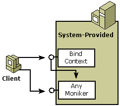
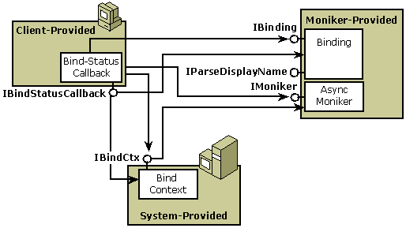

A client of a standard, synchronous OLE moniker typically creates and holds a reference to the moniker, as well as the bind-context to be used during binding. The components involved in using traditional monikers are shown in the following diagram.

Clients typically create standard monikers by calling functions such as CreateFileMoniker, CreateItemMoniker, or CreatePointerMoniker or, because they are can be saved to persistent storage, through OleSaveToStream and OleLoadFromStream. Monikers may also be obtained from a container object by calling the IBindHost::CreateMoniker method. Clients create bind contexts by calling the CreateBindCtx function and then pass the bind context to the moniker with calls to IMoniker::BindToStorage or IMoniker::BindToObject.
As shown in the following diagram, a client of an asynchronous moniker also creates and holds a reference to the moniker and bind context to be used during binding.

To get asynchronous behavior, the client implements the IBindStatusCallback interface on a bind-status-callback object and calls either the RegisterBindStatusCallback function or the CreateAsyncBindCtx function to register this interface with the bind context. The moniker passes a pointer to its IBinding interface in a call to the IBindStatusCallback::OnStartBinding method. The client tells the asynchronous moniker how it wants to bind on return from the moniker's call to IBindStatusCallback::GetBindInfo method.
Â
Â